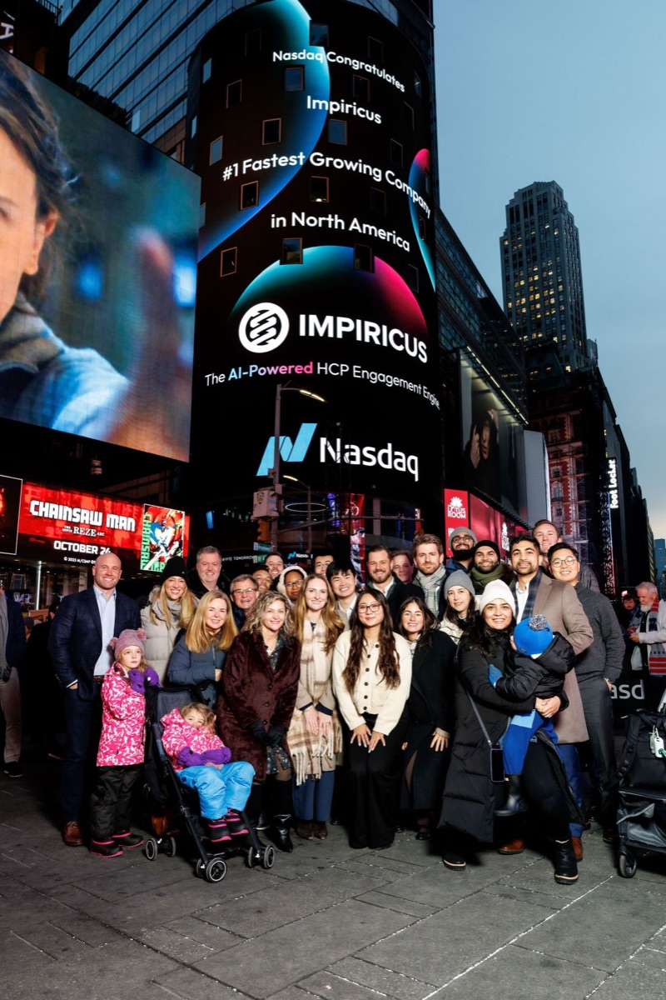
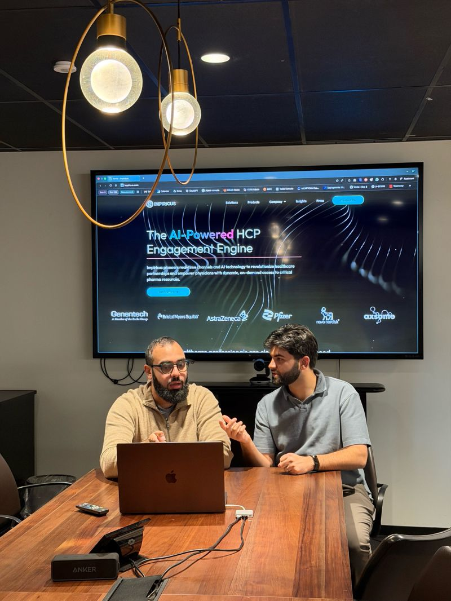
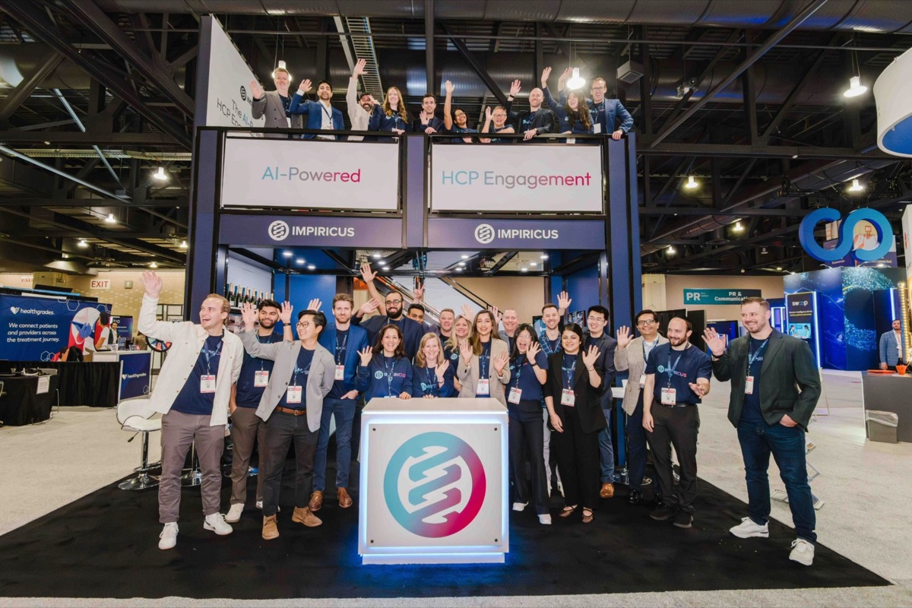
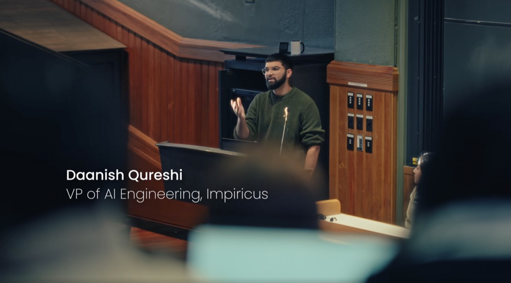
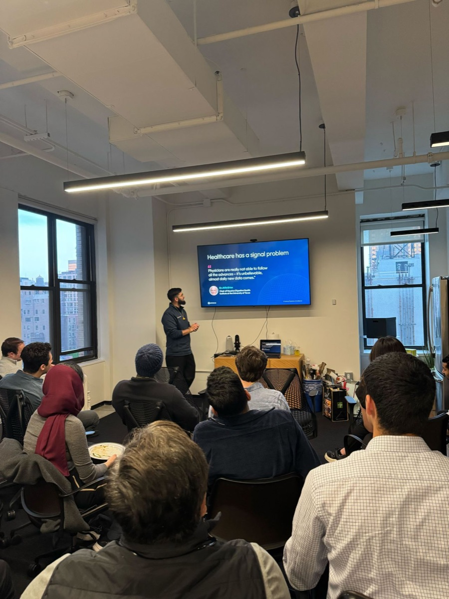
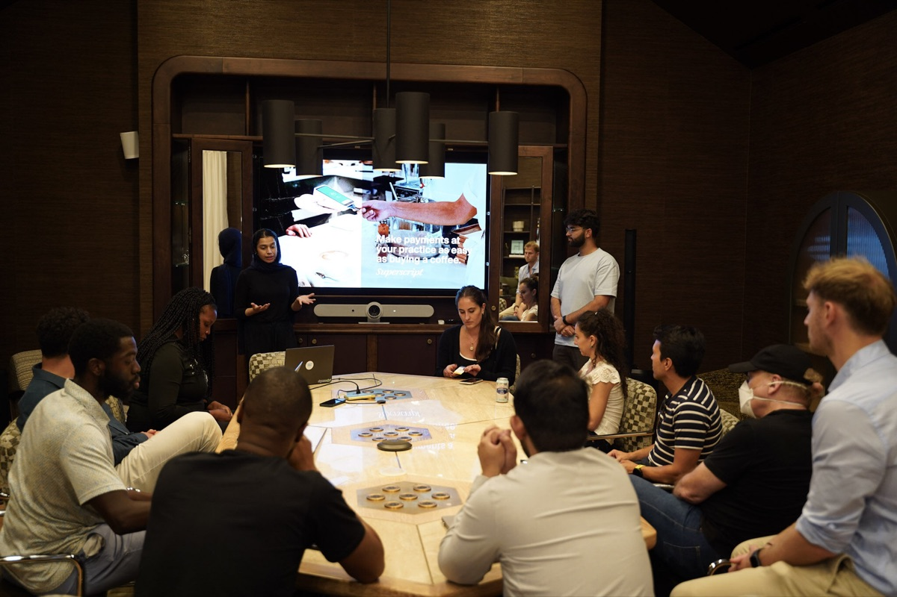
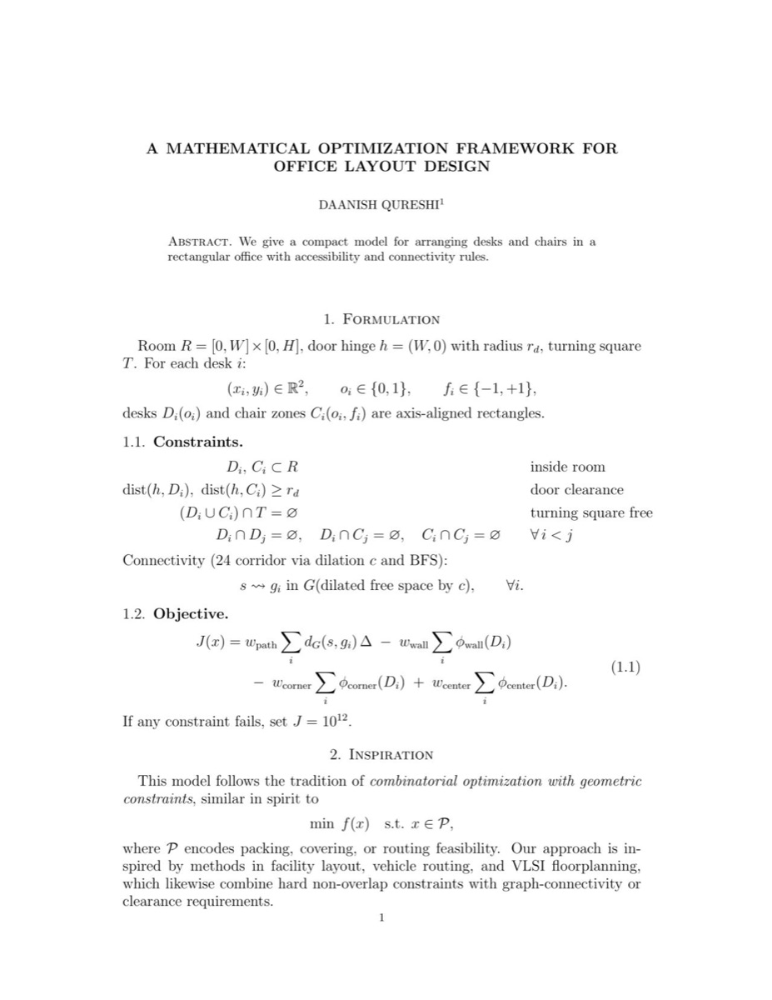

Industry
Alongside my PhD at Yale, where I work on AI agents and foundation models for biology, I build AI products in healthcare, invest in early-stage AI startups, and bring builders and clinicians together in New York.
Impiricus
Impiricus builds software that pharmaceutical companies use to engage healthcare providers, including ION (Intelligently Optimized Network), which I invented. I lead AI there, across agentic AI systems, optimization and operations research, applying an applied mathematics background to software used across pharmaceutical and provider networks.
- Architected and built the Ascend platform, the AI foundation the company runs on
- Lead AI research, turning early experiments into production capability
- Work spans predictive modeling of provider behavior, voice-based clinical workflow automation, and content systems for physician education
Impiricus was ranked #1 on Deloitte's 2025 Technology Fast 500, the fastest-growing company in North America, and #14 on the 2026 Inc. 5000.



LitGrab
LitGrab did statistics and data analytics for the content side of medical affairs at pharmaceutical companies, built on statistical pipelines, biomedical knowledge graphs, retrieval over peer-reviewed literature, and machine learning and LLM methods. I led the technology, from the full stack to the cloud infrastructure, through the company's acquisition by Impiricus in January 2025.
Investing
I advise and invest in early-stage AI startups.
Amorcer, investor and advisor. An AI-native platform that helps clinicians launch and run virtual chronic-care clinics (from the French amorcer, "to launch"). It was later acquired by 3Y Health, a practice-management platform for clinician entrepreneurs.
Events and talks
Talk at Harvard University

Spoke at Harvard with the Harvard Computer Society and HCS Tech for Social Good, as VP of AI Engineering at Impiricus.
Hackers and Healers Mixer

Co-hosted with Mujtaba from DxAngels at the new Impiricus office in New York. The idea was simple: put people who build technology in a room with people who practice medicine.
Builders should hear directly from clinicians about what is broken, what is frustrating, and what is actually worth solving.
Healthtech Builder's Circle

Hosted doctors, engineers, founders and investors in New York to work through some of the most pressing problems in healthcare.
A lighter side of applied math

"A Mathematical Optimization Framework for Office Layout Design", a tongue-in-cheek but fully formal write-up that treats arranging the office's desks and chairs as a constrained optimization problem: room boundaries, door clearance, no overlaps, connectivity checked by graph search, and an explicit objective.